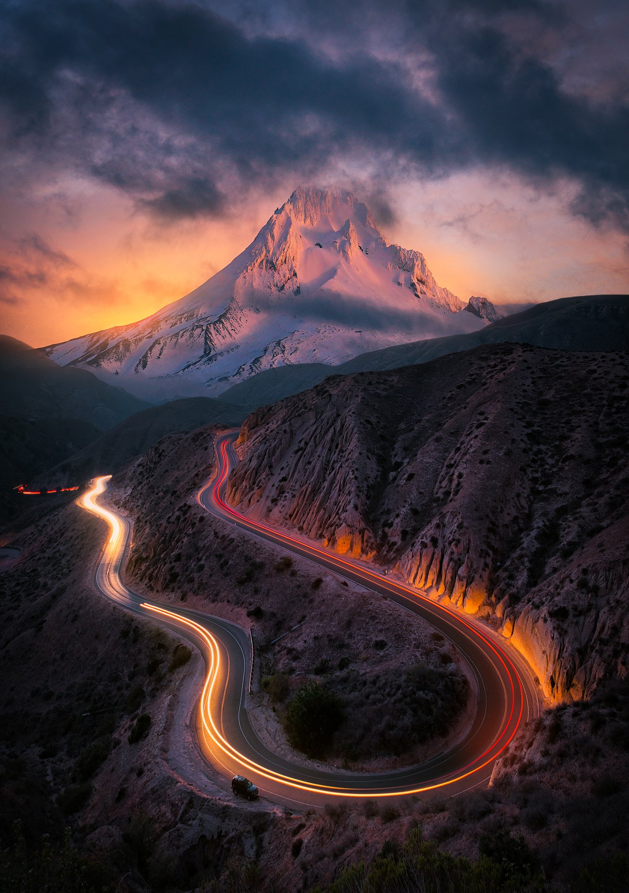
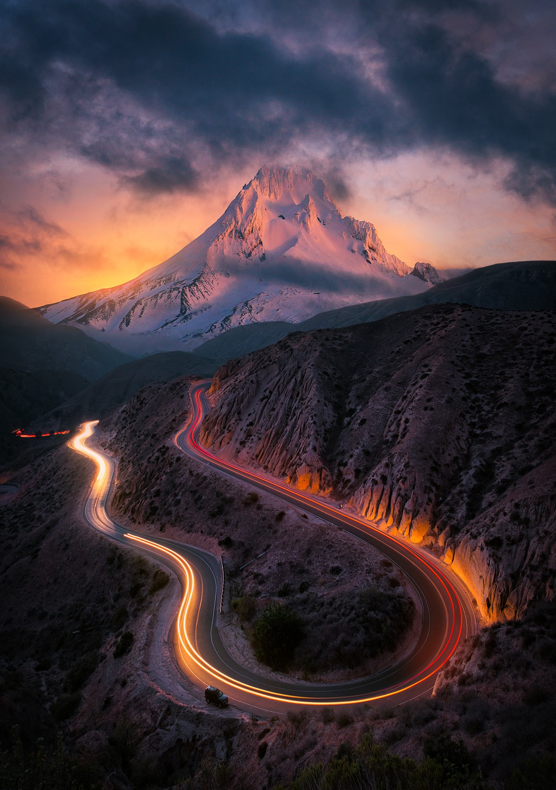

მთის ისტორია
მსოფლიოს ყველაზე მაღალი მთების ხუთეულს ხსნის 8481 მეტრი სიმაღლის მწვერვალი მაკალუ. გამოიცანით სად მდებარეობს... დიახ! ჰიმალაებში. ორივე მწვერვალი, რომლისგანაც შედგება მთა აღემატება 8000 მეტრს.
მსოფლიოს ყველაზე მაღალი მთების ხუთეულს ხსნის 8481 მეტრი სიმაღლის მწვერვალი მაკალუ. გამოიცანით სად მდებარეობს... დიახ! ჰიმალაებში. ორივე მწვერვალი, რომლისგანაც შედგება მთა აღემატება 8000 მეტრს.
